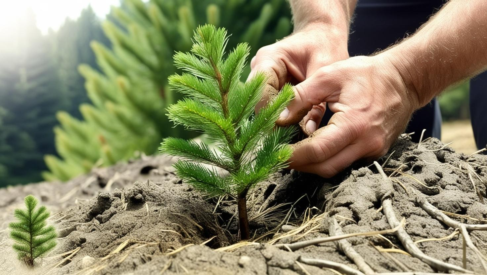
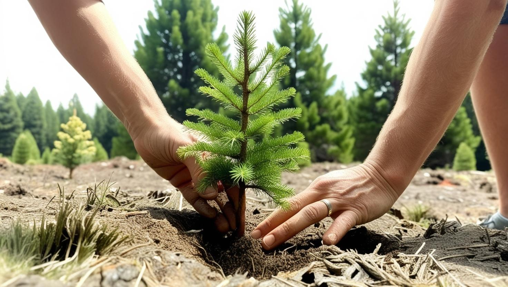
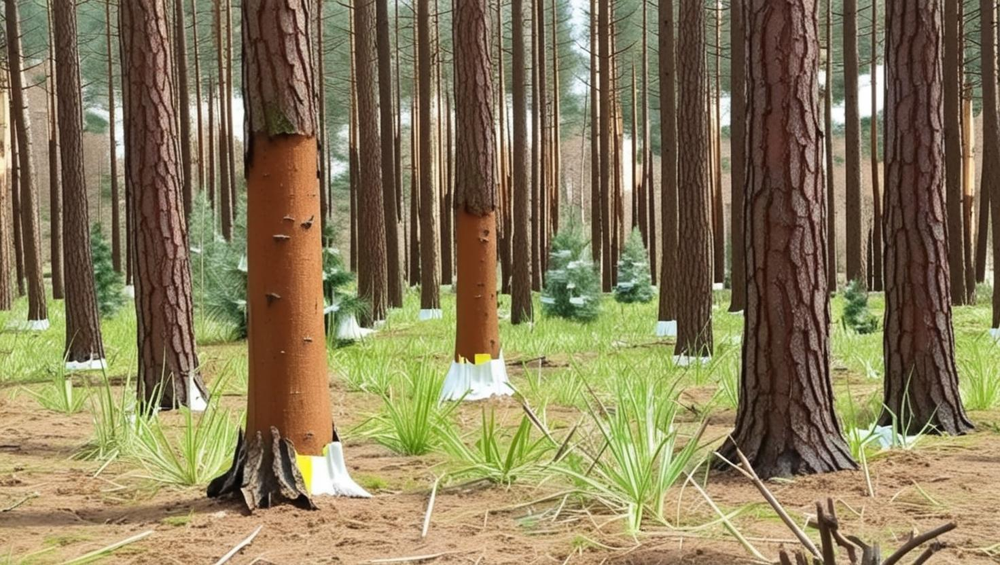

Cultivo do Pinus
Plantio
O plantio do Pinus é o primeiro passo crucial para o sucesso da silvicultura. Inicia-se com a seleção criteriosa de mudas de alta qualidade, preferencialmente clonadas e provenientes de viveiros certificados. Essas mudas devem apresentar boa sanidade e vigor para garantir um estabelecimento eficaz no campo. O preparo do solo é fundamental e envolve aração, gradagem e, em muitos casos, a correção da acidez (calagem) e adubação, conforme a análise do solo. O espaçamento entre as mudas é um fator determinante para o desenvolvimento das árvores e varia de acordo com o objetivo da plantação: espaçamentos mais densos para produção de celulose e madeira de menor diâmetro, e espaçamentos mais amplos para madeira de maior qualidade e diâmetro para serraria. O plantio pode ser manual ou mecanizado, com a abertura de covas ou sulcos, garantindo que as raízes da muda fiquem bem acomodadas e que haja boa aderência do solo.
Manejo e Crescimento
Durante a fase de crescimento, o Pinus requer manejo constante para otimizar sua produtividade e saúde. O controle de ervas daninhas é essencial nos primeiros anos para evitar a competição por nutrientes, água e luz. Além disso, o monitoramento e controle de pragas e doenças, como o ataque de brocas ou fungos, são realizados por meio de inspeções regulares e aplicação de medidas preventivas ou corretivas. A poda é uma prática silvicultural importante, principalmente em florestas destinadas à produção de madeira para serraria. Consiste na remoção dos galhos inferiores da árvore, promovendo a formação de um fuste reto e limpo de nós, o que valoriza a madeira. O desbaste, por sua vez, é a remoção seletiva de árvores em excesso dentro do povoamento. Essa prática garante que as árvores remanescentes tenham mais espaço, luz e nutrientes para crescerem com maior vigor e atingirem diâmetros maiores em menos tempo, além de melhorar a sanidade geral da floresta.
Colheita
A colheita do Pinus é o ponto culminante do ciclo de produção e é realizada quando as árvores atingem a idade e o diâmetro ideais para o propósito final da madeira. Para celulose, a colheita pode ocorrer entre 7 e 10 anos, enquanto para madeira serrada, pode variar de 15 a 25 anos, dependendo da espécie de Pinus e das condições de crescimento. O processo de colheita pode ser manual ou mecanizado. A colheita mecanizada, com o uso de máquinas como harvesters e forwarders, é mais eficiente e segura, minimizando o impacto ambiental. Após o corte das árvores, a madeira é desgalhada, descascada (em alguns casos) e seccionada em toras de diferentes comprimentos, conforme as especificações da indústria. O transporte da madeira para as indústrias de processamento (serrarias, fábricas de celulose ou compensado) é uma etapa logística crucial. A colheita deve ser planejada e executada de forma sustentável, garantindo a regeneração da floresta e a minimização do impacto ambiental, muitas vezes com a certificação florestal que atesta as boas práticas de manejo.